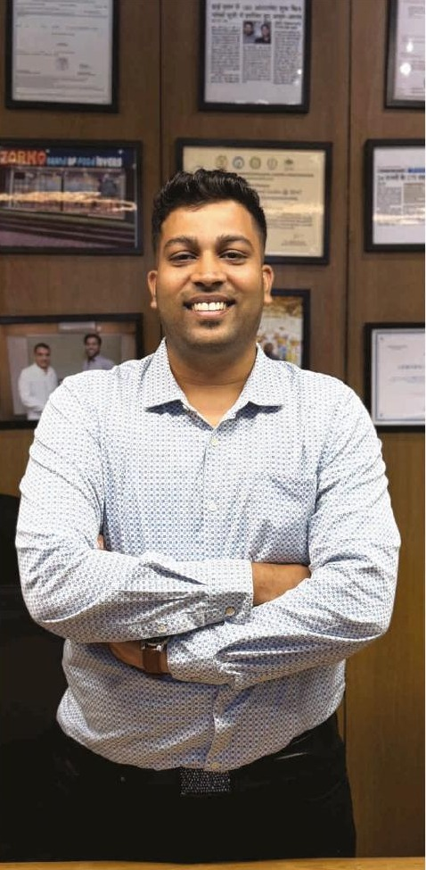
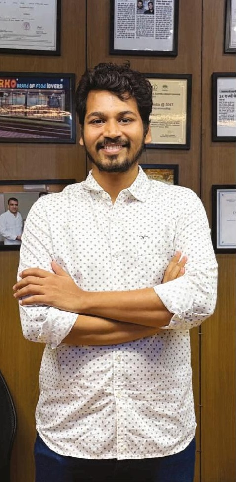

CO-FOUNDER · CHAIRMAN & DIRECTORAnand Nahar
An engineering background and experience in financial markets inform Anand’s focus on business strategy, brand building, and expansion.
Founders with a vision. Teams with the drive to make it real. Meet the people and disciplines behind Zorko.

CO-FOUNDER · CHAIRMAN & DIRECTORAn engineering background and experience in financial markets inform Anand’s focus on business strategy, brand building, and expansion.

CO-FOUNDER · WHOLE-TIME DIRECTORWith a background in environmental engineering and anthropology, Amrit brings an operational focus to processes, consistency, and the franchise network.
Chief Operating Officer · Supporting the operational direction of the business.
Chief Financial Officer · Leading the company’s finance function.
Company Secretary · Supporting corporate governance and company secretarial matters.
Leadership names and titles are based on the official Zorko team page reviewed in November 2026.

Conversations with entrepreneurs and the coordination behind new franchise opportunities.
Practical guidance, standard procedures, and support for the people running outlets.
Creative communication and the work that helps local outlets build visibility.
Coordination of the materials, relationships, and day-to-day support behind the network.
The internal functions that help a growing company work with structure and accountability.